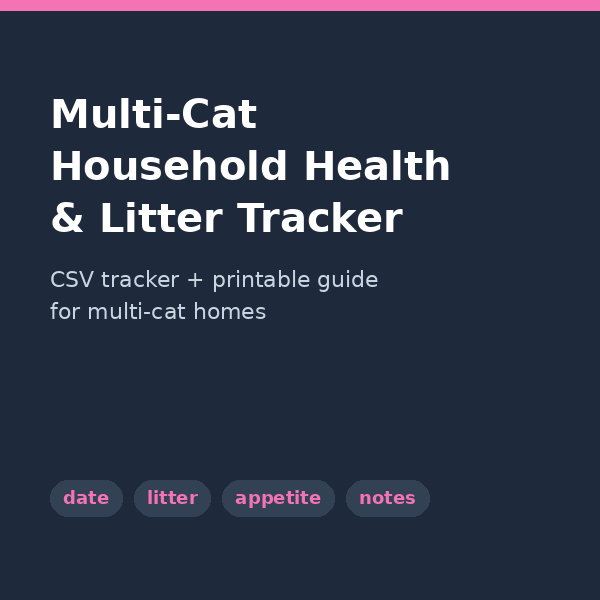

Multi-Cat Household Health & Litter Tracking
Know what's normal for each of your cats
Log litter box visits, appetite, and behavior for every cat in a few minutes a day, so you can spot changes early and give your vet real data instead of guesses.

Multi-Cat Household Health & Litter Tracker — $14.99
A ready-to-use spreadsheet and guide for tracking each cat's daily health and litter habits.
Latest Posts
- How Many Litter Boxes Do You Need for Multiple Cats? — 2026-09-07
- Multi-Cat Household Essentials: Products That Actually Help — 2026-08-25
- The Complete Guide to Multi-Cat Household Health Tracking — 2026-08-24
- From Observations to Decisions: Using Your Tracker With Your Veterinarian — 2026-08-21
- Building Your Daily Tracking Routine: How to Log Without Overwhelm — 2026-08-21
- How to Use the Multi-Cat Household Health & Litter Tracker: Complete Walkthrough — 2026-08-21
- Adjusting What You Track: Seasonal Changes and Life Stages — 2026-08-21
- Frequently Asked Questions About Multi-Cat Tracking — 2026-08-21
- 5 Common Tracking Mistakes (and How to Avoid Them) — 2026-08-21
- Why Tracking Your Multi-Cat Household Really Matters — 2026-08-21